<!DOCTYPE html>


<html lang="zh-CN">


<head>
  <meta charset="utf-8" />
    
  <meta name="viewport" content="width=device-width, initial-scale=1, maximum-scale=1" />
  <title>
    微积分课程第二部分学习笔记 |  VincereZhou&#39;s blog
  </title>
  <meta name="generator" content="hexo-theme-ayer">
  
  <link rel="shortcut icon" href="/images/mojie.jpg" />
  
  
<link rel="stylesheet" href="/dist/main.css">

  <link rel="stylesheet" href="https://cdn.jsdelivr.net/gh/Shen-Yu/cdn/css/remixicon.min.css">
  
<link rel="stylesheet" href="/css/custom.css">

  
  <script src="https://cdn.jsdelivr.net/npm/pace-js@1.0.2/pace.min.js"></script>
  
  

  

<link rel="alternate" href="/atom.xml" title="VincereZhou's blog" type="application/atom+xml">
</head>

</html>

<body>
  <div id="app">
    
      
    <main class="content on">
      <section class="outer">
  <article
  id="post-微积分课程第二部分学习笔记"
  class="article article-type-post"
  itemscope
  itemprop="blogPost"
  data-scroll-reveal
>
  <div class="article-inner">
    
    <header class="article-header">
       
<h1 class="article-title sea-center" style="border-left:0" itemprop="name">
  微积分课程第二部分学习笔记
</h1>
 

    </header>
     
    <div class="article-meta">
      <a href="/posts/9e4272e7/" class="article-date">
  <time datetime="2021-04-20T09:23:26.000Z" itemprop="datePublished">2021-04-20</time>
</a> 
  <div class="article-category">
    <a class="article-category-link" href="/categories/%E7%90%86%E8%AE%BA%E5%AD%A6%E4%B9%A0/">理论学习</a> / <a class="article-category-link" href="/categories/%E7%90%86%E8%AE%BA%E5%AD%A6%E4%B9%A0/%E5%BE%AE%E7%A7%AF%E5%88%86/">微积分</a>
  </div>
  
<div class="word_count">
    <span class="post-time">
        <span class="post-meta-item-icon">
            <i class="ri-quill-pen-line"></i>
            <span class="post-meta-item-text"> 字数统计:</span>
            <span class="post-count">2.1k</span>
        </span>
    </span>

    <span class="post-time">
        &nbsp; | &nbsp;
        <span class="post-meta-item-icon">
            <i class="ri-book-open-line"></i>
            <span class="post-meta-item-text"> 阅读时长≈</span>
            <span class="post-count">7 分钟</span>
        </span>
    </span>
</div>
 
    </div>
      
    <div class="tocbot"></div>


  
    <div class="article-entry" itemprop="articleBody">
       
  <p>这是微积分课程的第二部分，后面还有，但是我没有做笔记了。</p>
<p>这里是微积分的<a target="_blank" rel="noopener" href="https://vincere.fun/posts/b445140c/">第一部分笔记</a>，微积分第二部分的资料见<a target="_blank" rel="noopener" href="https://tutorial.math.lamar.edu/Classes/CalcII/CalcII.aspx">官网</a></p>
<span id="more"></span>
<h1>Intergration Techniques</h1>
<p></p>
<p></p>
<p></p>
<h2 id="Integrals-involving-trig-functions">Integrals involving trig functions</h2>
<p>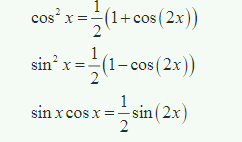</p>
<p>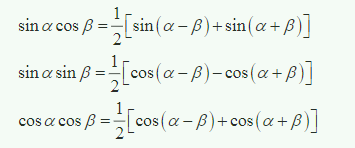</p>
<p>关于tan(x) 和 sec(x) 的关系</p>
<p>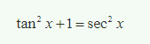</p>
<p>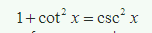</p>
<h2 id="Trig-Substitutions">Trig Substitutions</h2>
<p>将正常函数转化为三角函数。如下例</p>
<p></p>
<p></p>
<p></p>
<h2 id="Partial-Fractions">Partial Fractions</h2>
<p>对于分母与分子都是二项式的式子，如果<strong>分子的最高项低于分母</strong>，可以将这个式子先进行分解，再积分。、</p>
<p>下面这个图没看懂？</p>
<p>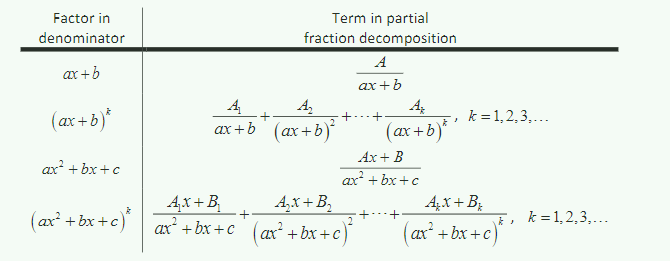</p>
<p>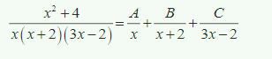</p>
<h2 id="Integrals-Involving-Roots">Integrals Involving Roots</h2>
<p>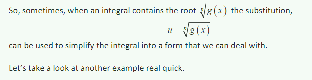</p>
<h2 id="Integrals-involving-quadratics">Integrals involving quadratics</h2>
<p>如果有不符合以上规则的多项式（最多为二次）（即首先分子不是分母导数的倍数；分母不能因式分解），还想要使用三角函数。那么就需要先提取出x 的平方的函数。如下。</p>
<p>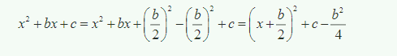</p>
<h2 id="Integration-Strategy">Integration Strategy</h2>
<h2 id="Imporper-Integrals">Imporper Integrals</h2>
<h3 id="Infinite-interval">Infinite interval</h3>
<p>当定积分的一侧或两侧是无穷大时，正确的做法用一个字母代替无穷大，然后求其极限值。</p>
<p></p>
<p>如果这种积分<strong>存在</strong>并且是一个常数，我们就说这个被积变量是<strong>convergent</strong>；反之，如果积分<strong>不存在</strong>或是<strong>无穷大</strong>，那么我们就说这个被积变量是<strong>divergent</strong>。</p>
<h3 id="Distontinuous-Integrand">Distontinuous Integrand</h3>
<p>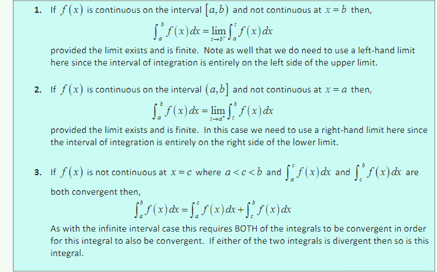</p>
<p>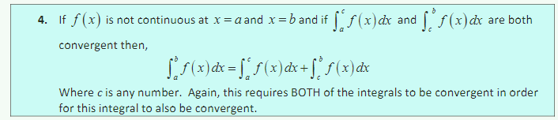</p>
<h2 id="Comparison-Test-for-Improper-Integrals">Comparison Test for Improper Integrals</h2>
<p>如果不容易求积分，可以通过下面这个式子判断函数是否<strong>coverge</strong>。</p>
<p>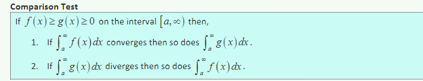</p>
<p>很容易理解，因为积分是面积。</p>
<h2 id="Approximating-Definite-Integrals">Approximating Definite Integrals</h2>
<p>不是所有的被积变量都能求出原函数。因此有时需要<strong>近似估计定积分</strong>的值。</p>
<p>就是把定积分看成是<strong>求面积</strong>的问题。</p>
<h3 id="Midpoint-Rule">Midpoint Rule</h3>
<p>将[a,b]区间平均取n等分，每个小区间取<strong>中间点</strong>的值作为每个<strong>小矩形</strong>的高。</p>
<p>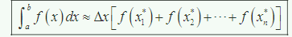</p>
<h3 id="Trapezoid-Rule">Trapezoid Rule</h3>
<p>一样是n等分，不同是算每个<strong>梯形</strong>的面积。</p>
<p>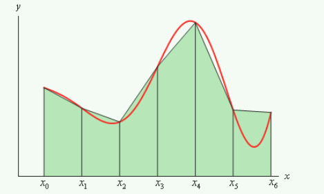</p>
<p>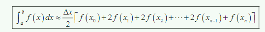</p>
<h3 id="Simpson’s-Rule">Simpson’s Rule</h3>
<p>同上 n等分。不过n必须为<strong>偶数</strong>。</p>
<p>类似于上一条，不过上一条是取直线。而这里是每两个区间（有3个点），求其<strong>二次式</strong>。这里用的是曲线。</p>
<p>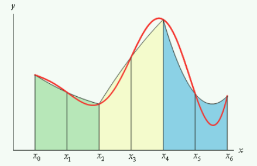</p>
<p>下面每两个区间的面积不知道是咋推的。（未证明）</p>
<p>我不知道三条边是直线，一条边是曲线，怎么求面积。</p>
<p>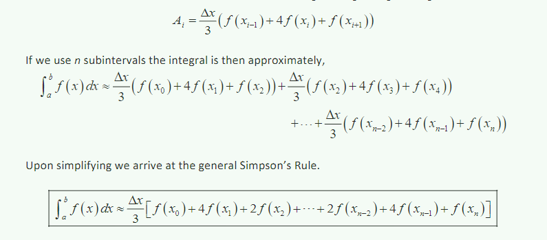</p>
<p>这三种方法中，第三种方法一般<strong>误差最小</strong>。</p>
<h1>Applications of Integrals</h1>
<h2 id="Arc-length">Arc length</h2>
<p>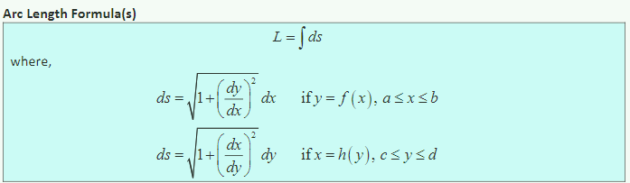</p>
<h2 id="Surface-Area">Surface Area</h2>
<p>求旋转体的表面积。由于没有看Calculus I 的求旋转体的体积，因此跳过。</p>
<h2 id="Center-of-Mass">Center of Mass</h2>
<p>求平均分布的薄板的质心。就是只支撑这一点能维持水平的地方。</p>
<p>公式没看懂。首先假设这个物体的上下边缘分别是一个函数。</p>
<p>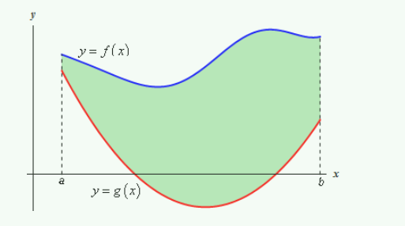</p>
<p>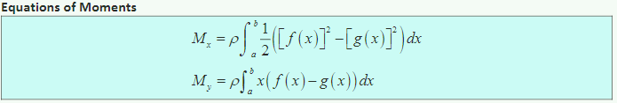</p>
<p>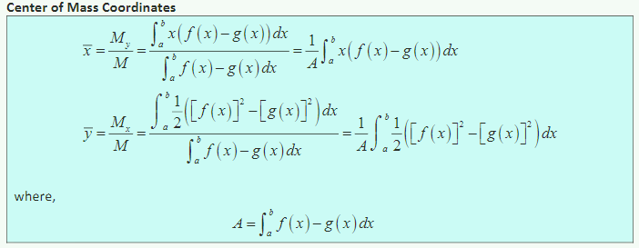</p>
<h2 id="Hydrostatic-Pressure-and-Force">Hydrostatic Pressure and Force</h2>
<p>涉及流体力学。求流体静力，貌似是等于水压乘面积。但是水压随着水深的变化而变化，因此需要用到微积分。</p>
<p>自己推理计算，对了。</p>
<p>但是不严谨，没有严格按照定积分的公式。</p>
<h2 id="Probability">Probability</h2>
<p>根据概率密度曲线，求连续分布的随机变量在某区间取值的概率。</p>
<p></p>
<p></p>
<h1>Parametric Equations and Polar Coordinates</h1>
<h2 id="Parametric-Equations-and-Curves">Parametric Equations and Curves</h2>
<p>有的时候，我们得不到 y = f(x) 或 x = h(y) 这两种形式的函数。例如圆的式子。但是有时我们可以得到一个 x = f(t) 和 y = g(t) 的形式。根据t 的定义域，每一个t，就能得到一个点(f(t),g(t))。这些点连起来得到的曲线就是<strong>parametric curve</strong>。</p>
<p>注意 parametric curve 是有方向的，是t 不断增大的方向。</p>
<h2 id="Tangents-with-Parametric-Equations">Tangents with Parametric Equations</h2>
<p>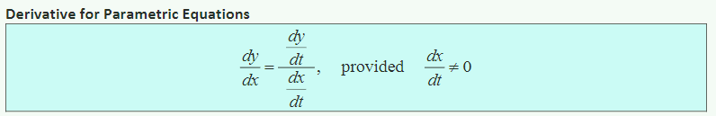</p>
<p>感觉这个式子，可以用速度的例子。一个是水平的运动，一个是竖直方向的运动。</p>
<p></p>
<p></p>
<p>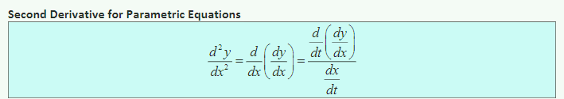</p>
<h2 id="Area-with-Parametric-Equations">Area with Parametric Equations</h2>
<p>求面积（积分），设 x = f(t) ; y = g(t)</p>
<p></p>
<h2 id="Arc-Length-with-Parametric-Equations">Arc Length with Parametric Equations</h2>
<p>推导省略，下面少了一个条件，即 dx/dt &gt; 0 。即 t 要保持从左往右走。</p>
<p></p>
<p>不如用原来的函数。</p>
<p>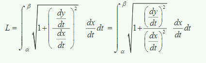</p>
<p>懂了，如果<strong>不考虑方向</strong>（也就是路程，而不是位移），那么可以直接用省略的公式。考虑方向，那么省略公式如果 dx/dt &gt; 0 时用原公式，如果 dx/dt &lt; 0 时原公式加一个负号。</p>
<h2 id="Surface-Area-with-Parametric-Equations">Surface Area with Parametric Equations</h2>
<p>求Parametric Curve 旋转体的表面积。之前这部分没看，跳过。</p>
<h2 id="Polar-Coordinates">Polar Coordinates</h2>
<p>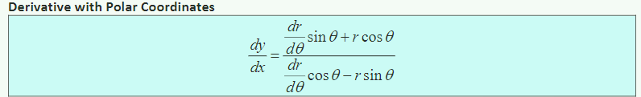</p>
<h3 id="Area-with-Polar-Coordinates">Area with Polar Coordinates</h3>
<p></p>
<p>应该是根据了圆弧求面积的公式。利用积分的思想。</p>
<p></p>
<p>注意：定积分中的 α 和 β ，要保持顺时针转动。</p>
<h3 id="Arc-Length-with-Polar-Coordinates">Arc Length with Polar Coordinates</h3>
<p>这里指的还是单纯的长度，不看方向。所以一直用的是 ds。</p>
<p></p>
<h3 id="Surface-Area-with-Polar-Coordinates">Surface Area with Polar Coordinates</h3>
<p>没看</p>
<h1>Series &amp; Sequence</h1>
<p>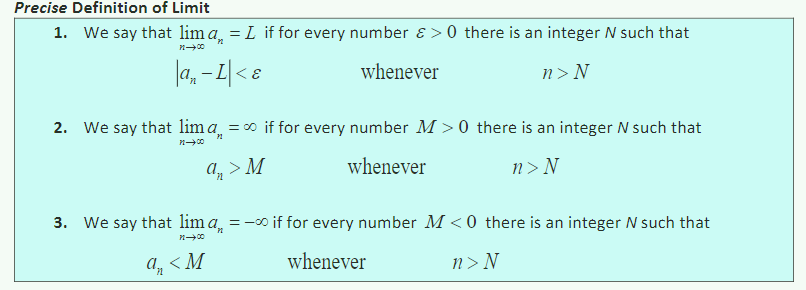</p>
<p>如果当n 趋于无穷，序列极限存在且为定值，那么我们就说这个序列是<strong>convergent</strong>；如果序列极限<strong>不存在</strong>或极限是<strong>无穷</strong>，那么我们就说这个序列是<strong>divergent</strong>。</p>
<p>求序列极限的方法</p>
<p>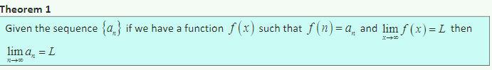</p>
<p>根据函数极限性质，推导出以下序列极限的特性。</p>
<p>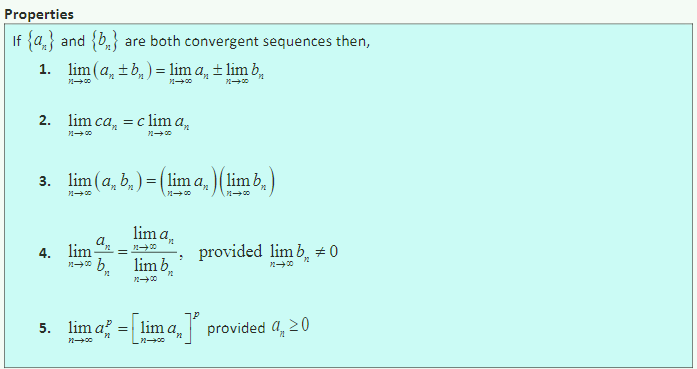</p>
<p>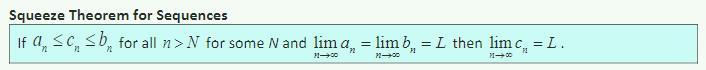</p>
<p>注意：下面的定理2 只有在极限为0时适用。</p>
<p>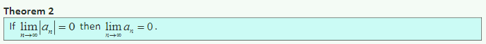</p>
<p>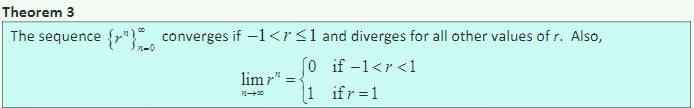</p>
<p>下面这个定理很好证。n 只能取奇数和偶数，而奇数和偶数都为L。那么这个序列的极限就肯定是L了。</p>
<p>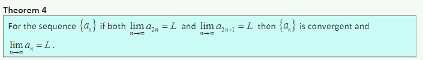</p>
<h2 id="More-on-Sequences">More on Sequences</h2>
<p>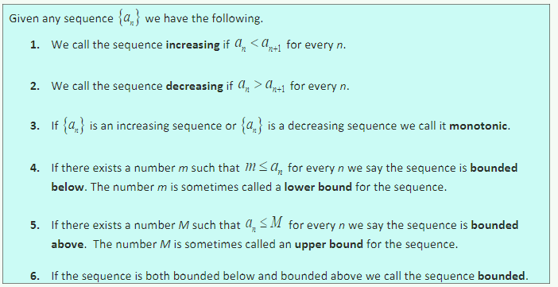</p>
<p>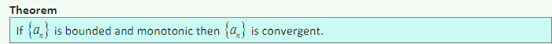</p>
<h2 id="Series-The-Basics">Series - The Basics</h2>
<p>没搞清楚这个series 的概念。</p>
<p>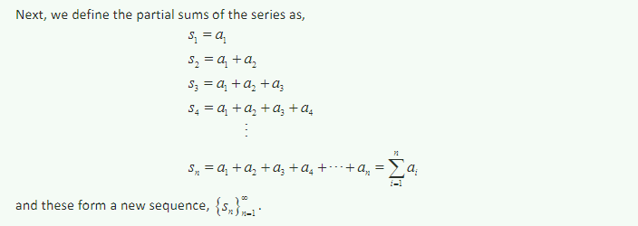</p>
<p>series 好像仅仅是一个数。懂了，其实series 只是上图中的 Sn。图里仅仅是推导步骤。</p>
<p>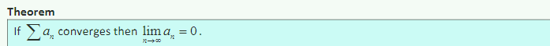</p>
<p>这个定理只是说 an 的极限为0 是其收敛的必要条件，并不是说 an 极限为0 就一定会收敛。</p>
<p>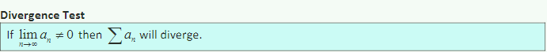</p>
<p>下面这个定理，很简单。就是从逻辑学里转换过来。</p>
<p>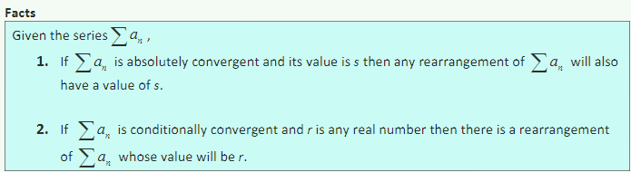</p>
<h2 id="Special-Series">Special Series</h2>
<p>后面的很多都是高中知识。</p>
<p>Integral Test 条件是 an 必须递减且为正数。</p>
<p>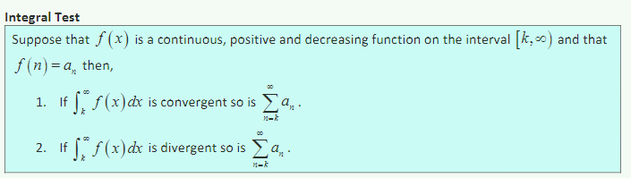</p>
<p>通过相同函数的积分只能看是否收敛，而不能求出series的<strong>值</strong>。</p>
<p>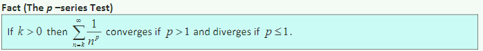</p>
<p>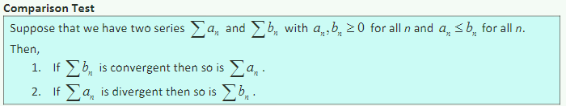</p>
<p>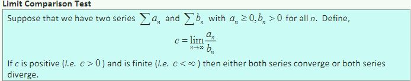</p>
<p>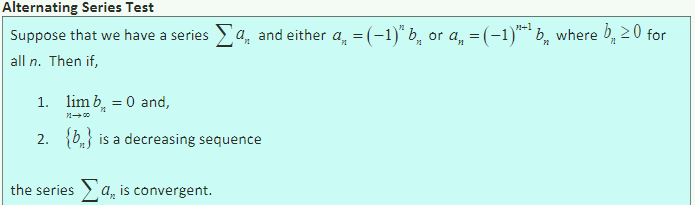</p>
<h2 id="Absolute-Convergence-Divergence">Absolute Convergence/Divergence</h2>
<p>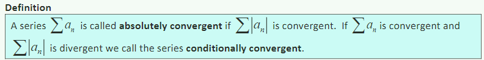</p>
<p>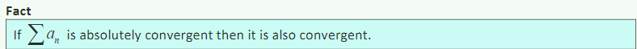</p>
<p>下面这条未证明</p>
<p>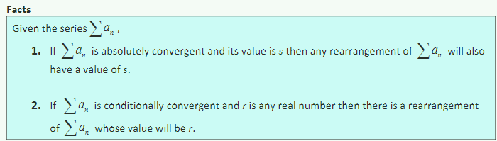</p>
<h2 id="Ratio-Test">Ratio Test</h2>
<p>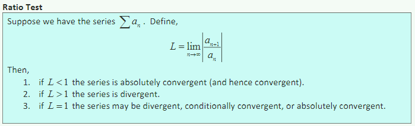</p>
<h2 id="Root-Test">Root Test</h2>
<p></p>
<p>下面未证明</p>
<p></p>
<h2 id="Strategy-for-Series">Strategy for Series</h2>
<h2 id="Estimating-the-Value-of-a-Series">Estimating the Value of a Series</h2>
<p>计算 Series 的值很多时候很困难，因此这里是<strong>估计</strong>Series 的值。而且下面都需要指定 n 的大小，其实就是说把 1(0) - n 的 sn 视为真值(?) ，后面的 Rn 视为误差项(?) 。</p>
<p>如果 an 一直是正数且递减</p>
<p></p>
<p>这里的n 越大，就越准。</p>
<h3 id="Comparison-Test">Comparison Test</h3>
<p></p>
<p>这种估计的准确性，取决于你使用的用于对比的函数。</p>
<h3 id="Alternating-Series-Test">Alternating Series Test</h3>
<p>没看懂，没证明。</p>
<p>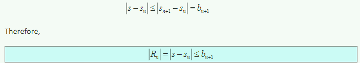</p>
<h3 id="Ratio-Test-2">Ratio Test</h3>
<p>这里需要假设series terms （即 an）都是正数。而且series 收敛，即 L &lt; 1。</p>
<p>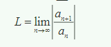</p>
<p>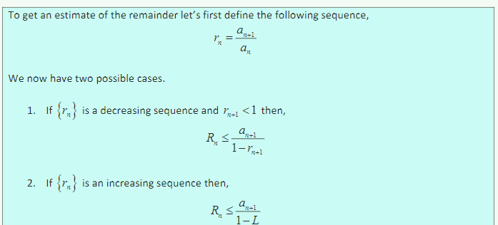</p>
<h2 id="Power-Series">Power Series</h2>
<p>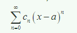</p>
<p></p>
<h2 id="Power-Series-and-Functions">Power Series and Functions</h2>
<p></p>
<p></p>
<p></p>
<p>这节有点不会用</p>
<h2 id="Taylor-Series">Taylor Series</h2>
<p>泰勒公式的 a 是自己给的，而且只是<strong>假设</strong> f(x) 可以转化为 下面的这个 series。</p>
<p>我懂了，泰勒公式里的a 取啥值都行，都成立，不过 一般取a=0 更简单。</p>
<p>泰勒公式不过是把一个函数换成了一个series。</p>
<p></p>
<p>如果将 a 设为0 ，即得到下面这个式子。</p>
<p></p>
<p>下面的式子没看懂，貌似是求收敛的区间？</p>
<p></p>
<p>几个重要的泰勒公式（a=0）</p>
<p></p>
<h2 id="Applications-of-Series">Applications of Series</h2>
<ol>
<li>当原函数不能直接求积分时，可以使用泰勒公式进行<strong>转换</strong>。</li>
<li>使用<strong>n阶泰勒公式</strong>近似估计函数值。</li>
</ol>
<h2 id="Binomial-Series">Binomial Series</h2>
<p></p>
<p>下面的定理没有证明，没看懂。（k是任意数，比如k=0.5,下面的阶乘怎么算的）</p>
<p></p>
<h1>Vectors</h1>
<h2 id="Vectors-The-Basics">Vectors - The Basics</h2>
<p>向量只需要<strong>大小</strong>和<strong>方向</strong>，和起始位置<strong>无关</strong>。所以下图都是<strong>同一向量</strong>。</p>
<p></p>
<p></p>
<h3 id="Dot-Product">Dot Product</h3>
<p></p>
<p>下面这个式子往往用于求两向量的<strong>夹角</strong>，多维同样适用。</p>
<p></p>
<h3 id="projections-（投影）">projections （投影）</h3>
<p>b向量 在 a 向量的投影为：</p>
<p></p>
<p></p>
<h3 id="Direction-Cosines">Direction Cosines</h3>
<p>三维空间下，向量与x , y , z 轴形成的夹角的cosine。</p>
<p></p>
<p>下面均易证</p>
<p></p>
<h2 id="Cross-Product">Cross Product</h2>
<ul>
<li>点乘的结果是一个<strong>标量</strong></li>
<li>叉乘的结果是一个<strong>向量</strong></li>
</ul>
<p></p>
<p>实际是3×3的行列式的结果</p>
<p></p>
<p></p>
<p>叉乘的大小和方向如下：（方向符合**右手准则，**从a到b旋转）</p>
<p></p>
<p></p>
<p>从图可知，叉乘<strong>垂直</strong>于两个向量，或者说垂直这两个向量构成的平面。</p>
<p>如果 a 和 b 平行（夹角为0或180度）, 那么其叉乘大小为0，即为0向量。</p>
<p></p>
<p></p>
<p>下面的性质不太懂，未证明</p>
<p></p>
<h3 id="叉乘的几何性质">叉乘的几何性质</h3>
<p>叉乘本身是两个向量形成的平行四边形的<strong>面积</strong></p>
<p>但是下面的<strong>体积</strong>计算没看懂</p>
<p></p>
<h1>3-Dimensional Space</h1>
<h2 id="Equations-of-Lines">Equations of Lines</h2>
<p></p>
<p></p>
<p>另一种形式</p>
<p></p>
<h2 id="Equations-of-Planes">Equations of Planes</h2>
<p>n向量是法线（normal vector）</p>
<p></p>
<p></p>
<p></p>
<h2 id="Quadric-Surfaces">Quadric Surfaces</h2>
<p>没细看。</p>
<p>351页后都没看。2020年前就先到这了。我看calculus Ⅲ还涉及这一部分，估计之后还得看。</p>
 
      <!-- reward -->
      
    </div>
    

    <!-- copyright -->
    
    <div class="declare">
      <ul class="post-copyright">
        <li>
          <i class="ri-copyright-line"></i>
          <strong>版权声明： </strong>
          
          本博客所有文章除特别声明外，著作权归作者所有。转载请注明出处！
          
        </li>
      </ul>
    </div>
    
    <footer class="article-footer">
       
<div class="share-btn">
      <span class="share-sns share-outer">
        <i class="ri-share-forward-line"></i>
        分享
      </span>
      <div class="share-wrap">
        <i class="arrow"></i>
        <div class="share-icons">
          
          <a class="weibo share-sns" href="javascript:;" data-type="weibo">
            <i class="ri-weibo-fill"></i>
          </a>
          <a class="weixin share-sns wxFab" href="javascript:;" data-type="weixin">
            <i class="ri-wechat-fill"></i>
          </a>
          <a class="qq share-sns" href="javascript:;" data-type="qq">
            <i class="ri-qq-fill"></i>
          </a>
          <a class="douban share-sns" href="javascript:;" data-type="douban">
            <i class="ri-douban-line"></i>
          </a>
          <!-- <a class="qzone share-sns" href="javascript:;" data-type="qzone">
            <i class="icon icon-qzone"></i>
          </a> -->
          
          <a class="facebook share-sns" href="javascript:;" data-type="facebook">
            <i class="ri-facebook-circle-fill"></i>
          </a>
          <a class="twitter share-sns" href="javascript:;" data-type="twitter">
            <i class="ri-twitter-fill"></i>
          </a>
          <a class="google share-sns" href="javascript:;" data-type="google">
            <i class="ri-google-fill"></i>
          </a>
        </div>
      </div>
</div>

<div class="wx-share-modal">
    <a class="modal-close" href="javascript:;"><i class="ri-close-circle-line"></i></a>
    <p>扫一扫，分享到微信</p>
    <div class="wx-qrcode">
      
    </div>
</div>

<div id="share-mask"></div>  
  <ul class="article-tag-list" itemprop="keywords"><li class="article-tag-list-item"><a class="article-tag-list-link" href="/tags/%E5%BE%AE%E7%A7%AF%E5%88%86/" rel="tag">微积分</a></li><li class="article-tag-list-item"><a class="article-tag-list-link" href="/tags/%E7%90%86%E8%AE%BA%E5%AD%A6%E4%B9%A0/" rel="tag">理论学习</a></li></ul>

    </footer>
  </div>

   
  <nav class="article-nav">
    
      <a href="/posts/3263dd4c/" class="article-nav-link">
        <strong class="article-nav-caption">上一篇</strong>
        <div class="article-nav-title">
          
            Data Analysis for the Life Sciences
          
        </div>
      </a>
    
    
      <a href="/posts/b445140c/" class="article-nav-link">
        <strong class="article-nav-caption">下一篇</strong>
        <div class="article-nav-title">微积分课程第一部分学习笔记</div>
      </a>
    
  </nav>

   
<!-- valine评论 -->
<div id="vcomments-box">
  <div id="vcomments"></div>
</div>
<script src="//cdn1.lncld.net/static/js/3.0.4/av-min.js"></script>
<script src="https://cdn.jsdelivr.net/npm/valine@1.4.14/dist/Valine.min.js"></script>
<script>
  new Valine({
    el: "#vcomments",
    app_id: "yHN3kf7fHt5wvleM2DVoHLdY-gzGzoHsz",
    app_key: "RPIwmdftljIzOtAULwc7JCAp",
    path: window.location.pathname,
    avatar: "monsterid",
    placeholder: "靓仔，看完留个评论再走哇！\n只需要填入昵称和邮箱就可以了",
    recordIP: true,
  });
  const infoEle = document.querySelector("#vcomments .info");
  if (infoEle && infoEle.childNodes && infoEle.childNodes.length > 0) {
    infoEle.childNodes.forEach(function (item) {
      item.parentNode.removeChild(item);
    });
  }
</script>
<style>
  #vcomments-box {
    padding: 5px 30px;
  }

  @media screen and (max-width: 800px) {
    #vcomments-box {
      padding: 5px 0px;
    }
  }

  #vcomments-box #vcomments {
    background-color: #fff;
  }

  .v .vlist .vcard .vh {
    padding-right: 20px;
  }

  .v .vlist .vcard {
    padding-left: 10px;
  }
</style>

 
   
     
</article>

</section>
      <footer class="footer">
  <div class="outer">
    <ul>
      <li>
        Copyrights &copy;
        2019-2021
        <i class="ri-heart-fill heart_icon"></i> Vincere Zhou
      </li>
    </ul>
    <ul>
      <li>
        
        
        <span>
  <span><i class="ri-user-3-fill"></i>访问人数:<span id="busuanzi_value_site_uv"></span></s>
  <span class="division">|</span>
  <span><i class="ri-eye-fill"></i>浏览次数:<span id="busuanzi_value_page_pv"></span></span>
</span>
        
      </li>
    </ul>
    <ul>
      
    </ul>
    <ul>
      
    </ul>
    <ul>
      <li>
        <!-- cnzz统计 -->
        
        <script type="text/javascript" src='https://s9.cnzz.com/z_stat.php?id=1278069914&amp;web_id=1278069914'></script>
        
      </li>
    </ul>

    <!-- 与只只在一起天数 -->
	<ul>
		<li><span id="lovetime_span"></span></li>
	</ul>
    <script type="text/javascript">			
        function show_runtime() {
            window.setTimeout("show_runtime()", 1000);
            X = new Date("03/04/2021 22:11:00");
            Y = new Date();
            T = (Y.getTime() - X.getTime());
            M = 24 * 60 * 60 * 1000;
            a = T / M;
            A = Math.floor(a);
            b = (a - A) * 24;
            B = Math.floor(b);
            c = (b - B) * 60;
            C = Math.floor((b - B) * 60);
            D = Math.floor((c - C) * 60);
            lovetime_span.innerHTML = "只只和周周在一起了 " + A + "天" + B + "小时" + C + "分" + D + "秒"
        }
        show_runtime();
    </script>

  </div>
</footer>
      <div class="float_btns">
        <div class="totop" id="totop">
  <i class="ri-arrow-up-line"></i>
</div>

<div class="todark" id="todark">
  <i class="ri-moon-line"></i>
</div>

      </div>
    </main>
    <aside class="sidebar on">
      <button class="navbar-toggle"></button>
<nav class="navbar">
  
  <div class="logo">
    <a href="/"></a>
  </div>
  
  <ul class="nav nav-main">
    
    <li class="nav-item">
      <a class="nav-item-link" href="/">主页</a>
    </li>
    
    <li class="nav-item">
      <a class="nav-item-link" href="/archives">归档</a>
    </li>
    
    <li class="nav-item">
      <a class="nav-item-link" href="/categories">分类</a>
    </li>
    
    <li class="nav-item">
      <a class="nav-item-link" href="/tags">标签</a>
    </li>
    
    <li class="nav-item">
      <a class="nav-item-link" href="/friends">友链</a>
    </li>
    
    <li class="nav-item">
      <a class="nav-item-link" href="/posts/ac7827ff">我的只只</a>
    </li>
    
    <li class="nav-item">
      <a class="nav-item-link" href="/about">关于我</a>
    </li>
    
  </ul>
</nav>
<nav class="navbar navbar-bottom">
  <ul class="nav">
    <li class="nav-item">
      
      <a class="nav-item-link nav-item-search"  title="搜索">
        <i class="ri-search-line"></i>
      </a>
      
      
      <a class="nav-item-link" target="_blank" href="/atom.xml" title="RSS Feed">
        <i class="ri-rss-line"></i>
      </a>
      
    </li>
  </ul>
</nav>
<div class="search-form-wrap">
  <div class="local-search local-search-plugin">
  <input type="search" id="local-search-input" class="local-search-input" placeholder="Search...">
  <div id="local-search-result" class="local-search-result"></div>
</div>
</div>
    </aside>
    <script>
      if (window.matchMedia("(max-width: 768px)").matches) {
        document.querySelector('.content').classList.remove('on');
        document.querySelector('.sidebar').classList.remove('on');
      }
    </script>
    <div id="mask"></div>

<!-- #reward -->
<div id="reward">
  <span class="close"><i class="ri-close-line"></i></span>
  <p class="reward-p"><i class="ri-cup-line"></i>请我喝杯咖啡吧~</p>
  <div class="reward-box">
    
    <div class="reward-item">
      
      <span class="reward-type">支付宝</span>
    </div>
    
    
    <div class="reward-item">
      
      <span class="reward-type">微信</span>
    </div>
    
  </div>
</div>
    
<script src="/js/jquery-2.0.3.min.js"></script>


<script src="/js/lazyload.min.js"></script>

<!-- Tocbot -->


<script src="/js/tocbot.min.js"></script>

<script>
  tocbot.init({
    tocSelector: '.tocbot',
    contentSelector: '.article-entry',
    headingSelector: 'h1, h2, h3, h4, h5, h6',
    hasInnerContainers: true,
    scrollSmooth: true,
    scrollContainer: 'main',
    positionFixedSelector: '.tocbot',
    positionFixedClass: 'is-position-fixed',
    fixedSidebarOffset: 'auto'
  });
</script>

<script src="https://cdn.jsdelivr.net/npm/jquery-modal@0.9.2/jquery.modal.min.js"></script>
<link rel="stylesheet" href="https://cdn.jsdelivr.net/npm/jquery-modal@0.9.2/jquery.modal.min.css">
<script src="https://cdn.jsdelivr.net/npm/justifiedGallery@3.7.0/dist/js/jquery.justifiedGallery.min.js"></script>

<script src="/dist/main.js"></script>

<!-- ImageViewer -->

<!-- Root element of PhotoSwipe. Must have class pswp. -->
<div class="pswp" tabindex="-1" role="dialog" aria-hidden="true">

    <!-- Background of PhotoSwipe. 
         It's a separate element as animating opacity is faster than rgba(). -->
    <div class="pswp__bg"></div>

    <!-- Slides wrapper with overflow:hidden. -->
    <div class="pswp__scroll-wrap">

        <!-- Container that holds slides. 
            PhotoSwipe keeps only 3 of them in the DOM to save memory.
            Don't modify these 3 pswp__item elements, data is added later on. -->
        <div class="pswp__container">
            <div class="pswp__item"></div>
            <div class="pswp__item"></div>
            <div class="pswp__item"></div>
        </div>

        <!-- Default (PhotoSwipeUI_Default) interface on top of sliding area. Can be changed. -->
        <div class="pswp__ui pswp__ui--hidden">

            <div class="pswp__top-bar">

                <!--  Controls are self-explanatory. Order can be changed. -->

                <div class="pswp__counter"></div>

                <button class="pswp__button pswp__button--close" title="Close (Esc)"></button>

                <button class="pswp__button pswp__button--share" style="display:none" title="Share"></button>

                <button class="pswp__button pswp__button--fs" title="Toggle fullscreen"></button>

                <button class="pswp__button pswp__button--zoom" title="Zoom in/out"></button>

                <!-- Preloader demo http://codepen.io/dimsemenov/pen/yyBWoR -->
                <!-- element will get class pswp__preloader--active when preloader is running -->
                <div class="pswp__preloader">
                    <div class="pswp__preloader__icn">
                        <div class="pswp__preloader__cut">
                            <div class="pswp__preloader__donut"></div>
                        </div>
                    </div>
                </div>
            </div>

            <div class="pswp__share-modal pswp__share-modal--hidden pswp__single-tap">
                <div class="pswp__share-tooltip"></div>
            </div>

            <button class="pswp__button pswp__button--arrow--left" title="Previous (arrow left)">
            </button>

            <button class="pswp__button pswp__button--arrow--right" title="Next (arrow right)">
            </button>

            <div class="pswp__caption">
                <div class="pswp__caption__center"></div>
            </div>

        </div>

    </div>

</div>

<link rel="stylesheet" href="https://cdn.jsdelivr.net/npm/photoswipe@4.1.3/dist/photoswipe.min.css">
<link rel="stylesheet" href="https://cdn.jsdelivr.net/npm/photoswipe@4.1.3/dist/default-skin/default-skin.min.css">
<script src="https://cdn.jsdelivr.net/npm/photoswipe@4.1.3/dist/photoswipe.min.js"></script>
<script src="https://cdn.jsdelivr.net/npm/photoswipe@4.1.3/dist/photoswipe-ui-default.min.js"></script>

<script>
    function viewer_init() {
        let pswpElement = document.querySelectorAll('.pswp')[0];
        let $imgArr = document.querySelectorAll(('.article-entry img:not(.reward-img)'))

        $imgArr.forEach(($em, i) => {
            $em.onclick = () => {
                // slider展开状态
                // todo: 这样不好，后面改成状态
                if (document.querySelector('.left-col.show')) return
                let items = []
                $imgArr.forEach(($em2, i2) => {
                    let img = $em2.getAttribute('data-idx', i2)
                    let src = $em2.getAttribute('data-target') || $em2.getAttribute('src')
                    let title = $em2.getAttribute('alt')
                    // 获得原图尺寸
                    const image = new Image()
                    image.src = src
                    items.push({
                        src: src,
                        w: image.width || $em2.width,
                        h: image.height || $em2.height,
                        title: title
                    })
                })
                var gallery = new PhotoSwipe(pswpElement, PhotoSwipeUI_Default, items, {
                    index: parseInt(i)
                });
                gallery.init()
            }
        })
    }
    viewer_init()
</script>

<!-- MathJax -->

<script type="text/x-mathjax-config">
  MathJax.Hub.Config({
      tex2jax: {
          inlineMath: [ ['$','$'], ["\\(","\\)"]  ],
          processEscapes: true,
          skipTags: ['script', 'noscript', 'style', 'textarea', 'pre', 'code']
      }
  });

  MathJax.Hub.Queue(function() {
      var all = MathJax.Hub.getAllJax(), i;
      for(i=0; i < all.length; i += 1) {
          all[i].SourceElement().parentNode.className += ' has-jax';
      }
  });
</script>

<script src="https://cdn.jsdelivr.net/npm/mathjax@2.7.6/unpacked/MathJax.js?config=TeX-AMS-MML_HTMLorMML"></script>
<script>
  var ayerConfig = {
    mathjax: true
  }
</script>

<!-- Katex -->

<!-- busuanzi  -->


<script src="/js/busuanzi-2.3.pure.min.js"></script>


<!-- ClickLove -->

<!-- ClickBoom1 -->

<!-- ClickBoom2 -->

<!-- CodeCopy -->


<link rel="stylesheet" href="/css/clipboard.css">

<script src="https://cdn.jsdelivr.net/npm/clipboard@2/dist/clipboard.min.js"></script>
<script>
  function wait(callback, seconds) {
    var timelag = null;
    timelag = window.setTimeout(callback, seconds);
  }
  !function (e, t, a) {
    var initCopyCode = function(){
      var copyHtml = '';
      copyHtml += '<button class="btn-copy" data-clipboard-snippet="">';
      copyHtml += '<i class="ri-file-copy-2-line"></i><span>COPY</span>';
      copyHtml += '</button>';
      $(".highlight .code pre").before(copyHtml);
      $(".article pre code").before(copyHtml);
      var clipboard = new ClipboardJS('.btn-copy', {
        target: function(trigger) {
          return trigger.nextElementSibling;
        }
      });
      clipboard.on('success', function(e) {
        let $btn = $(e.trigger);
        $btn.addClass('copied');
        let $icon = $($btn.find('i'));
        $icon.removeClass('ri-file-copy-2-line');
        $icon.addClass('ri-checkbox-circle-line');
        let $span = $($btn.find('span'));
        $span[0].innerText = 'COPIED';
        
        wait(function () { // 等待两秒钟后恢复
          $icon.removeClass('ri-checkbox-circle-line');
          $icon.addClass('ri-file-copy-2-line');
          $span[0].innerText = 'COPY';
        }, 2000);
      });
      clipboard.on('error', function(e) {
        e.clearSelection();
        let $btn = $(e.trigger);
        $btn.addClass('copy-failed');
        let $icon = $($btn.find('i'));
        $icon.removeClass('ri-file-copy-2-line');
        $icon.addClass('ri-time-line');
        let $span = $($btn.find('span'));
        $span[0].innerText = 'COPY FAILED';
        
        wait(function () { // 等待两秒钟后恢复
          $icon.removeClass('ri-time-line');
          $icon.addClass('ri-file-copy-2-line');
          $span[0].innerText = 'COPY';
        }, 2000);
      });
    }
    initCopyCode();
  }(window, document);
</script>


<!-- CanvasBackground -->


    
  </div>
<script src="/live2dw/lib/L2Dwidget.min.js?094cbace49a39548bed64abff5988b05"></script><script>L2Dwidget.init({"pluginRootPath":"live2dw/","pluginJsPath":"lib/","pluginModelPath":"assets/","tagMode":false,"debug":false,"model":{"jsonPath":"live2d-widget-model-wanko"},"display":{"position":"left","width":150,"height":300,"hOffset":80,"vOffset":-70},"mobile":{"show":false,"scale":0.5},"log":false});</script></body>

</html>